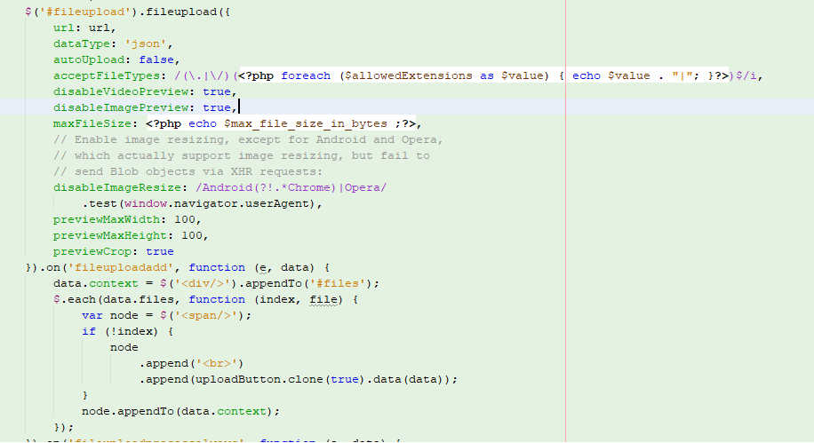

Thank you for purchasing my script. If you have any questions that are beyond the scope of this help file, please feel free to email via my user page contact form here. Thanks so much!
The script is used to upload videos from PC & it supports convert from remote URLs and remote server and it shows progress bar for all PC upload and remote upload.
This script can be used as stand alone to upload and convert videos , or you can plug that script in your web application
that's why the template structure is as simple as possible to help you easily modify it.
1. PC UPLOAD
2. Remote UPLOAD
This video shows how it works
The script used a jQuery File Upload jQuer File Upload which as far as i know the best for such job it's well documented and you can change the uploader to the following types of uploaders

<?php ini_set("memory_limit","100M");?>
//this is maximum file size for remote upload <?php $max_file_size=100;?>
//in MB for the PC upload<?php $delete_files=24; ?>
//after how many hours the uploaded video, converted video and logs get
deleted means after hours <?php $proxy="";?>
//set your proxy details use the correct proxy format (IP:Port)
<?php $proxyuser="";?>
// set your proxy user name if there any
<?php $proxypass="";?>
// set your proxy password if there any<?php $email_to=name@domain.com; ?>
// your email to receive messages You can include variables about converted video in your project in easy way, all usable varibales are stored in $_SESSIONS[], all you need is use those sessions in your project.
Sessions which you can use
I've used the following extensions, plug-ins or as listed.
Once again, thank you so much for purchasing this script. As I said at the beginning, I'd be glad to help you if you have any questions relating to this script. No guarantees, but I'll do my best to assist. If you have a more general question relating to the script on CodeCanyon, you might consider visiting the forums and asking your question in the "Item Discussion" section.